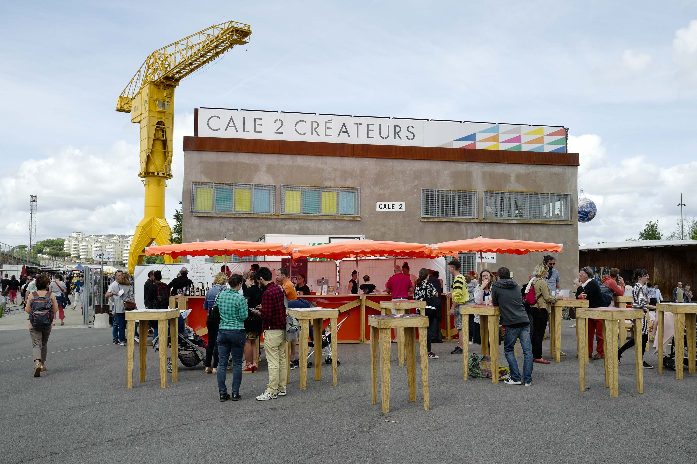

/// 12 Jun 2017 ///
Nantes Food Forum 2017

La première édition du Nantes Food Forum s’est déroulée du 2 au 5 juin 2017 autour du thème manger demain. Conférences, débats, dîners, ateliers et le grand marché des Pays de la Loire ont animé pendant 4 jours cet événement qui a rencontré un franc succés et qui connaîtra en 2018 une seconde édition.


Pour tout savoir sur cette première édition : Nantes Food Forum